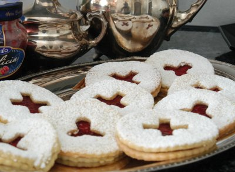

| Zutaten für 30-60 Stück: | |
| 250 g | Butter oder Maraerine |
| 125 g | Puderzucker oder Zucker |
| 2 Tl | Vanillezucker |
| 1 Prise | Salz |
| 1 | Eiweiss |
| 350 g | Mehl |
| Konfitüre | |
Die Butter oder Margarine in einer Schüssel weich rühren.
Den Puderzucker oder Zucker, die 2 Tl Vanillezucker und 1 Prise Salz beigeben und rühren, bis die Masse hell ist.
Ein Eiweiss leicht verklopfen und darunter rühren.
Mehl dazu schütten und zu einem Teig zusammenfügen.
Zugedeckt ca. 1 Stunde kühl stellen.
Anschliessend den Teig portionenweise zwischen einem aufgeschnittenen Plastikbeutel 2mm dick auswallen.
Plätzchen von 4-5cm Durchmesser ausstechen und bei der Hälfte (für die Deckel) mit einer kleineren Form eine Figur mitten drin ausstechen.
Auf Backpapier in der Mitte des auf 200°C vorgeheizten Ofens 6-8 Minuten backen.
Nach dem Backen auskühlen lassen und die Böden mit einer Konfitüre nach Wahl bestreichen.
Deckel mit Puderzucker bestäuben und auf die Böden aufsetzen.
Von der Betty Bossi Webseite die das aus dem "Guetzlibuch" von 1996 hat.
Fränzi war voll begeistert. Mir waren die Spitzbuben etwas zu brösmelig. Hat vielleicht etwas mit dem Teig nicht gestimmt. Oder mit der Luftfeuchtigkeit (75% im August). Sie sahen seht schön aus und schmeckten auch gut. RE, 19.8.2008.
@LINKBACK_TAG@ @WAKELOCK@